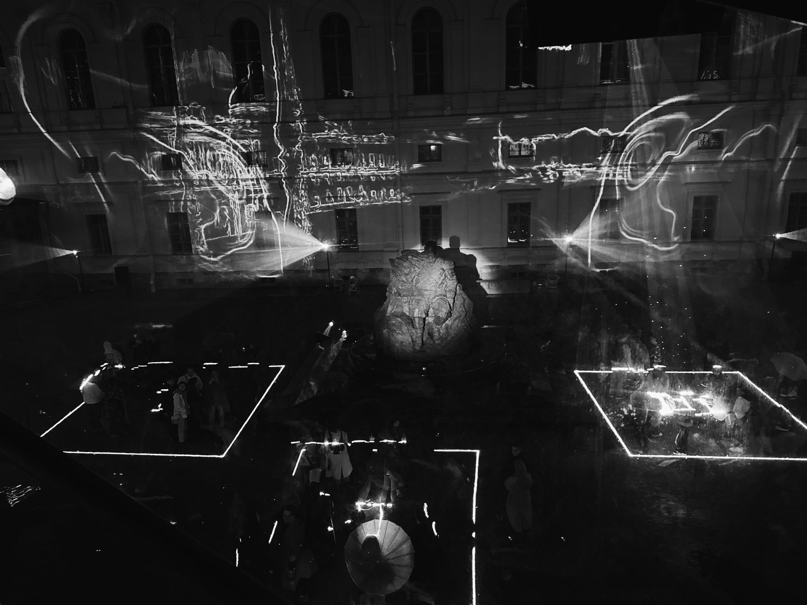

Projection mappingВидеомэппинг
synesthetic r(AI)nsynesthetic r(AI)n
Winner of the open call for 3D mapping on the façade of the Alexandrinsky Theatre. Digital Rain Festival, St. Petersburg, 2025.Победитель опен-колла на 3D-мэппинг фасада Александринского театра. Фестиваль медиаискусства D/G/TAL RA/N, Санкт-Петербург, 2025.
A fantasy on the theme of synesthetic flow, including the representation of V. V. Kandinsky’s Composition VI and Composition VII as treasures of twentieth-century culture.
Фантазия на тему синестетического потока, включающая репрезентацию «Композиции VI» и «Композиции VII» В. В. Кандинского как сокровищ культуры XX века.
nika sŭr-mã, in tandem with AI, paints an endless synesthetic rain — a symbol of eternal flow through the flood, toward restoration through destruction.
Ника Сурма в тандеме с ИИ пишет бесконечный синестетический дождь — символ вечного потока через потоп, к восстановлению через разрушение.
ImagesИзображения
